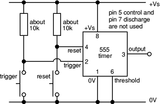

Bistable Mode
In bistable mode the 555 operates as a flip-flop with two stable states. The output changes when triggered and remains latched until reset.
Truth Table
| Trigger | Reset | Output |
|---|---|---|
| HIGH | HIGH | No Change |
| LOW | HIGH | SET (Output HIGH) |
| HIGH | LOW | RESET (Output LOW) |
